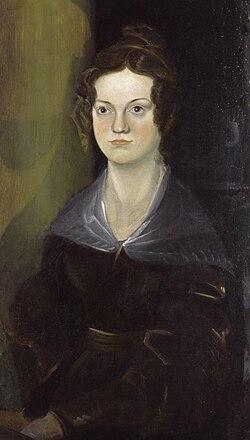

Charlotte
Brontë Charlotte , Brontë
- Дата рождения:
- 1816 г., 21 апреля
- Дата смерти:
- 1855 г., 31 марта
- Возраст:
- 38 лет 11 месяцев 10 дней
Родственники
 Муж 1854 г., 29 июняArthur Bell Nicholls1819 г., 06 января - † 1906 г., 02 декабря (87 лет 10 месяцев 26 дней)
Муж 1854 г., 29 июняArthur Bell Nicholls1819 г., 06 января - † 1906 г., 02 декабря (87 лет 10 месяцев 26 дней) Отец 🩸 50%Patrick Brontë1777 г., 17 марта - † 1861 г., 07 июня (84 года 2 месяца 20 дней)
Отец 🩸 50%Patrick Brontë1777 г., 17 марта - † 1861 г., 07 июня (84 года 2 месяца 20 дней)- Мать 🩸 50%Maria Branwell1783 г., 15 апреля - † 1821 г., 15 сентября (38 лет 5 месяцев )
 Брат 🩸 50%Patrick Branwell Brontë1817 г., 26 июня - † 1848 г., 24 сентября (31 год 2 месяца 28 дней)
Брат 🩸 50%Patrick Branwell Brontë1817 г., 26 июня - † 1848 г., 24 сентября (31 год 2 месяца 28 дней)- Сестра 🩸 50%Maria Brontë1814 г., 23 апреля - † 1825 г., 06 мая (11 лет 13 дней)
- Сестра 🩸 50%Elizabeth Brontë1815 г., 08 февраля - † 1825 г., 15 июня (10 лет 4 месяца 7 дней)
 Сестра 🩸 50%Emily Jane Brontë1818 г., 30 июля - † 1848 г., 19 декабря (30 лет 4 месяца 19 дней)
Сестра 🩸 50%Emily Jane Brontë1818 г., 30 июля - † 1848 г., 19 декабря (30 лет 4 месяца 19 дней) Сестра 🩸 50%Anne Brontë1820 г., 17 января - † 1849 г., 28 мая (29 лет 4 месяца 11 дней)
Сестра 🩸 50%Anne Brontë1820 г., 17 января - † 1849 г., 28 мая (29 лет 4 месяца 11 дней)
Фотографии


Биография
Taught at Roe Head, then spent two years in Brussels at the Pensionnat Heger, which she reworked twice into fiction. In 1846 she found Emily's poems by accident and pushed all three sisters into print under the names Currer, Ellis and Acton Bell; the volume sold two copies.
Jane Eyre followed in 1847 and made her famous while nobody knew who she was.
Novels
- Jane Eyre (1847)
- Shirley (1849)
- Villette (1853)
- The Professor (written first, published 1857)
Reader, I married him.
She did, in June 1854 — her father's curate, after refusing him once and her father refusing him twice. She died the following March, in the early months of a pregnancy, the last of the six children to go.
Дополнительные сведения
- Рождение
- Место: Thornton, Yorkshire
- Смерть
- Место: Haworth, Yorkshire
Сведения о семье
- Брак с: Arthur Bell
- Бракосочетание
- Место: Haworth, Yorkshire
- Бракосочетание